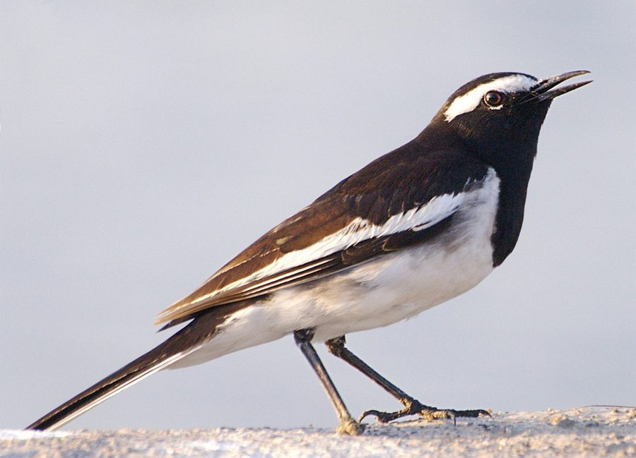

ममूलाWhite-browed Wagtail
Motacilla maderaspatensis · Motacillidae · BRD-0152

- Scientific name वैज्ञानिक नाम
- Motacilla maderaspatensis (Gmelin, 1789)
- Family कुल
- Motacillidae
- Hindi हिंदी
- ममूला / धोबिन
- Local names स्थानीय नाम
- mamula, mamoola, dhobin, dhoban, white browed wagtail, large pied wagtail
- Status here यहाँ की स्थिति
- native
- Movement आवागमन
- Resident, here all year
- IUCN IUCN
- LC
- Review समीक्षा
- audited and independently read
When to look कब देखें
Present all year. साल भर मौजूद।
Tell it apart from इनसे अलग पहचानें
ममूला / White-browed Wagtail
Motacilla maderaspatensis (Gmelin, 1789) — Motacillidae
ममूला — यह छोटी चिड़िया पूर्वी उत्तर प्रदेश में नदियों और नालों के किनारों पर हमेशा रहती है। इसके सिर पर सफेद भौंहें हैं, जिससे इसे पहचानना आसान है। यह बहुत तेजी से दौड़ती-फिरती है और पानी के किनारों पर कीड़े-मकोड़े खाती है। बरसात में इसकी चहचहाहट बहुत सुनाई देती है। यह हमेशा यहीं रहती है, कहीं और नहीं जाती।
Quick Identification त्वरित पहचान
| Feature | Description |
|---|---|
| Size | Small wagtail, 20–21 cm including long tail |
| Distinctive feature | Bold white supercilium (eyebrow); darker crown and back |
| Plumage | Dark grey-brown above; white supercilium; white throat and underparts; darker on flanks |
| Tail | Long, constantly wagged; dark with white edges |
| Behaviour | Runs rapidly on ground near water; territorial and vocal |
| Habitat | Strictly on water margins and riparian zones; not in fields |
| Season | Year-round resident |
Field tip: The only wagtail in eastern UP with a bold white eyebrow stripe. Unlike White Wagtail (winter visitor, found in fields) and Grey Wagtail (grey back, prefers fast water), White-browed Wagtail is a resident of still water margins with a distinctive eyebrow mark and restless ground-running habit.
हिंदी — कैसे पहचानें:
सफेद भौंहें — सबसे पहचान का निशान।
काली पीठ और सफेद पेट।
लंबी पूँछ हमेशा हिलती रहती है।
नदी और नाले के किनारों पर ही मिलता है।
Morphology आकारिकी
Biometrics:
| Measurement | Range |
|---|---|
| Total length | 200–210 mm |
| Wing (flattened chord) | 80–90 mm |
| Tail | 95–105 mm |
| Bill | 15–17 mm |
| Tarsus | 20–24 mm |
| Weight | 18–22 g |
Plumage: Crown and upper back dark grey-brown to blackish. The bold white supercilium (eyebrow) extending from lore to behind eye is the signature field mark. White throat and chin. Underparts white with dark grey or olive-brown wash on flanks and under-tail coverts. Tail dark grey-brown with white outer feathers.
Head: Crown dark; face marked by the bold white eyebrow stripe. Dark lore. Eyes dark.
Bill: Slender, straight, dark grey.
Legs: Dark grey or black; placed forward on body for rapid running.
Sexes: Females slightly duller; eyebrow less bold.
Juveniles: Browner overall; eyebrow stripe less prominent initially; develop adult plumage by first winter.
Vocalisations
Highly vocal, especially during breeding season:
- Contact call: A sharp, high-pitched tsip or chit between pairs.
- Alarm call: A repeated chitip-chitip-chitip given when disturbed.
- Song: A melodious warbling or trilling sequence given from low perches or during low display flights along water margins.
हिंदी: दिन भर चहचहाता रहता है। तेज, तीव्र आवाजें।
Behaviour & Ecology व्यवहार और पारिस्थितिकी
Ground forager: Feeds on small invertebrates caught on wet ground and rocks near water:
- Small insects and insect larvae
- Aquatic invertebrates
- Small crustaceans and worms
Feeding technique: Walks and runs rapidly along water margins, stopping to pick insects from surfaces. Often feeds in shallow water or on wet rocks.
Territorial: Highly territorial; pairs defend stretches of river or stream throughout the year. Males are aggressive toward intruding males, engaging in rapid chasing flights along water margins.
Breeding: Monogamous; pairs remain together year-round in the same territory. Nests on ground or in low vegetation near water.
Habitat specialization: Strictly dependent on water margins — rivers, streams, irrigation ditches, and wetland edges. Does not venture into fields like White Wagtail.
Resident: Year-round presence in eastern UP on suitable riparian habitat; no seasonal migration.
हिंदी: नदी और नाले के किनारों पर ही जीवन बिताता है। बहुत आक्रामक और क्षेत्रीय है।
Life Cycle / Phenology जीवन चक्र
Resident: Present year-round on permanent and semi-permanent water bodies in eastern UP.
Breeding: March to July; two broods possible. Peak activity April–June.
Nesting: Ground nest or low vegetation nest; simple scrape or cup of grass and feathers. Usually near water.
Eggs: 3–4 off-white or pale greenish eggs with dark markings.
Incubation: Approximately 14 days; both parents participate.
Fledging: Chicks fledge at approximately 12–13 days.
Roosting: On rocks or low branches near water; sometimes communal in post-breeding season.
हिंदी: साल भर रहता है। बसंत में अंडे देता है।
Host Plants or Prey आहार
| Food Type | Examples |
|---|---|
| Aquatic insects | Dragonflies, damselflies, mayflies |
| Small flies | Midges, gnats |
| Aquatic larvae | Chironomid larvae, mosquito larvae |
| Small crustaceans | Amphipods, isopods |
| Worms | Aquatic worms |
हिंदी: मुख्य रूप से कीड़े और जलीय लार्वे खाता है।
Predators / Natural Enemies शत्रु
- Snakes: Aquatic and semi-aquatic snakes near water margins
- Raptors: Shikra and other small eagles
- Crows and corvids: Depredate nests and eggs
- Mammals: Jackals and feral cats near water edges
हिंदी: साँप, बाज़, और कौवे का खतरा।
Agricultural / Human Relevance कृषि प्रासंगिकता
Protected species: Listed in Schedule IV of the Wildlife (Protection) Act 1972, amended 2022. As with all wild birds in India, the species has full legal protection.
Ecological role: By consuming aquatic insect larvae including mosquito larvae, the species provides a minor ecosystem service for pest control near water bodies.
Habitat dependence: Unlike other wagtails that have adapted to cultivation, the White-browed Wagtail remains tied to natural riparian habitats and is vulnerable to river management practices that degrade margins.
हिंदी: यह विधि अधिनियम 1972 के तहत संरक्षित है।
Expected Locally स्थानीय रूप से अपेक्षित
Not a field record. Written from published accounts for eastern Uttar Pradesh. No confirmed local sighting yet — if you have seen it, that is what the atlas needs.
अभी तक स्थानीय पुष्टि नहीं। यह विवरण प्रकाशित स्रोतों से है, किसी अवलोकन से नहीं।
The White-browed Wagtail is expected as a year-round resident along the Ghaghra, Rapti, Saryu, and other river systems in Basti and Ayodhya districts, as well as on permanent water channels and irrigation ditches. The species strictly requires water margins with exposed rocks or bare ground, and is never found in cultivated fields. Look for it running rapidly along river banks, especially on sandy margins and rocky islands. The bold white eyebrow stripe and habit of constantly wagging the tail are diagnostic. A first record would be a photograph clearly showing the white supercilium and dark plumage, taken at a river margin with date and GPS coordinates.
हिंदी: घाघरा और राप्ती नदियों के किनारों पर मिल सकता है। नहर और पानी के किनारों पर सफेद भौंहों वाली छोटी चिड़िया देखो।
Distribution वितरण
Global range: Indian subcontinent, from Himalayas to south India; predominantly on river and stream systems. Monotypic (single subspecies).
In India: Widespread on river systems throughout the mainland; found in suitable habitat from the Ganges plain to peninsular India.
In Uttar Pradesh: Present on all major river systems including the Ganges, Gomti, Ghaghra, and Rapti.
In Basti district / eastern UP: Expected on the Ghaghra, Rapti, and Saryu river systems, as well as on permanent irrigation ditches and water channels in Basti and Ayodhya districts.
Research Questions शोध प्रश्न
- What is the current population density of White-browed Wagtails on the Ghaghra and Rapti rivers in Basti district?
- How do territorial sizes vary with water volume and habitat quality? Do birds maintain the same territory year-round?
- क्या यह चिड़िया बाढ़ के समय अपनी जगह बदलती है? How does monsoon flooding affect territory occupancy?
- What is the breeding productivity (eggs per clutch, fledglings per pair) in eastern UP?
- How are populations affected by river management (dams, barrages, extraction) and sand mining?
- Do winter visitors (White Wagtail, Grey Wagtail) interact with resident White-browed Wagtail in shared riparian habitat?
Similar Species मिलती-जुलती प्रजातियाँ
| Species | How to distinguish | हिंदी | Field Rule |
|---|---|---|---|
| White Wagtail (Motacilla alba) — winter visitor | Black-and-white plumage; absent white eyebrow; found in fields and dry habitats | सफेद-काला खंजन | White Wagtail winters in October–March only; found in fields. White-browed is year-round on water. |
| Grey Wagtail (Motacilla cinerea) — winter visitor | Grey back; yellow rump and underparts; longer tail; prefers fast-flowing streams | ग्रे खंजन | Grey Wagtail has yellow rump and underparts; White-browed is mostly white below. |
Field rule: The only wagtail with a bold white eyebrow stripe. Year-round resident of water margins, never in fields.
Taxonomy & Classification वर्गीकरण
Original description. Described by Johann Friedrich Wilhelm Gmelin in 1789 as Motacilla maderaspatensis. Type locality is Madras (Chennai), India, from which the scientific name derives.
Subspecies. Monotypic — Motacilla maderaspatensis maderaspatensis. No subspecies are recognised.
Family and order placement. Order Passeriformes; family Motacillidae (wagtails and pipits). The genus Motacilla contains four species of wagtails found globally.
Phylogenetic notes. Molecular studies confirm Motacilla maderaspatensis as a distinct species, sister to the M. alba complex but with separate evolutionary history in the Indian subcontinent.
IUCN status rationale. Assessed as Least Concern (LC) on the IUCN Red List. The species has a stable population and wide range across Indian water systems, though it remains dependent on riparian habitat quality.
हिंदी: भारत की मूल निवासी चिड़िया है।
Photo Gallery फोटो गैलरी
No photos yet — add field photos to media/species/white_browed_wagtail/ and run node scripts/sync_photos.js.
Wanted photos:
- White eyebrow stripe detail
- Running on river margin
- Pair on rocks near water
- In flight showing tail pattern
- At water's edge feeding
References संदर्भ
- Gmelin, J.F. (1789). Systema Naturae per regna tria naturae. 13th ed. Leipzig. [Original description]
- Ali, S. & Ripley, S.D. (1987). Handbook of the Birds of India and Pakistan. Vol. 9. Oxford University Press, New Delhi.
- Grimmett, R., Inskipp, C. & Inskipp, T. (2011). Birds of the Indian Subcontinent. 2nd ed. Christopher Helm, London.
- BirdLife International (2024). Motacilla maderaspatensis. IUCN Red List of Threatened Species. Ver. 2024.
- Rasmussen, P.C. & Anderton, J.C. (2005). Birds of South Asia: The Ripley Guide. Smithsonian Institution, Washington DC.
- GBIF Occurrence Data — Motacilla maderaspatensis, Uttar Pradesh (2010–2025).
Source file: species/fauna/birds/white_browed_wagtail.md